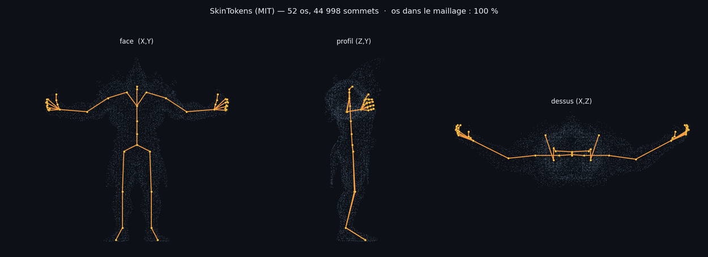
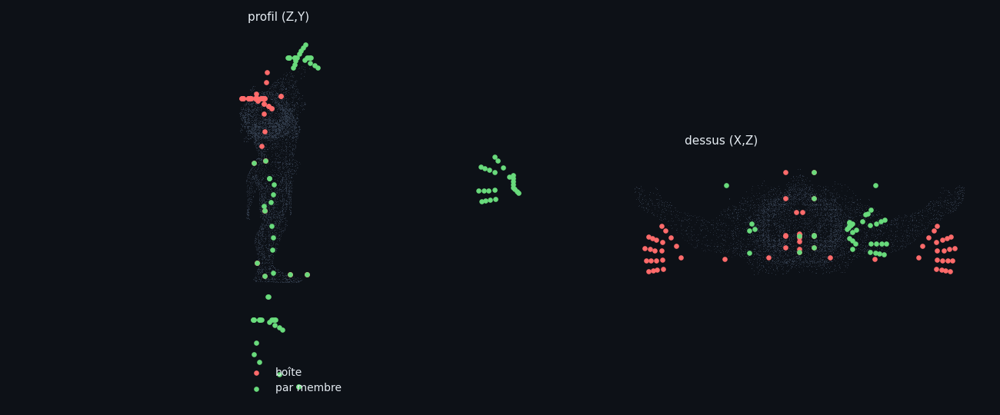
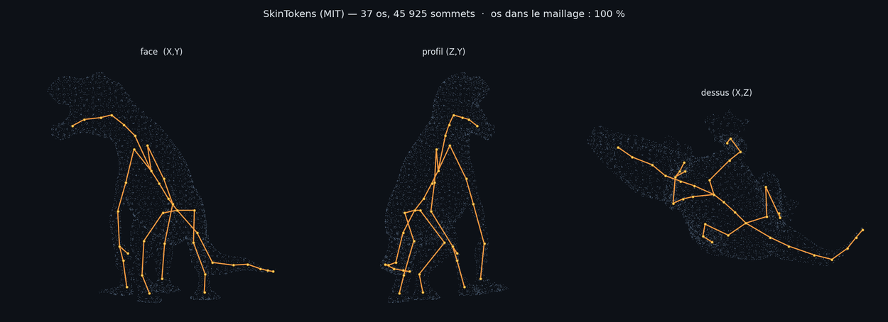
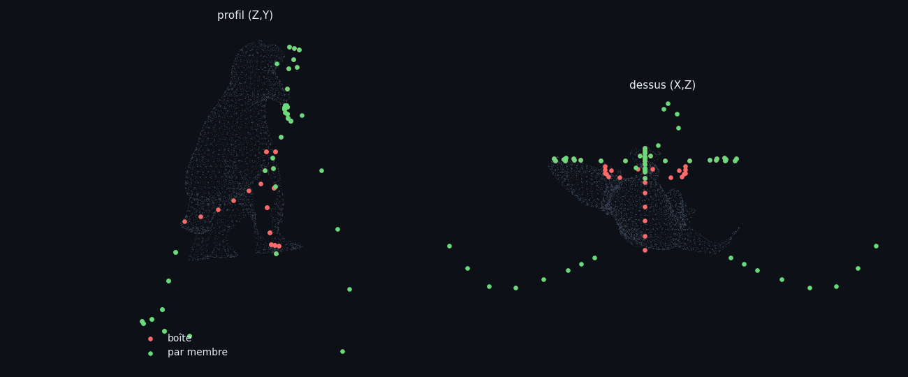

Pour chaque espèce : le rig natif SkinTokens (le « détecteur », étape 1 du
pipeline) puis la tentative de recalage du gabarit (rouge = position boîte,
vert = position par membre). La fourmi a réussi ; ces deux-là pas encore —
montrés tels quels.
Orc détecteur excellentrecalage raté — 17/66 os dans le corps

Le rig natif : T-pose propre, bras avec doigts en éventail, 52 os, 100 %
dans le maillage. SkinTokens excelle sur les humanoïdes — les données d'entrée du
recalage sont bonnes.

Le recalage du gabarit humain (66 os, doigts compris) : des chaînes vertes
flottent hors du corps — les « suiveuses » (doigts) reçoivent un décalage dans le
mauvais repère. C'est un défaut de MON appariement, pas du détecteur.
Alligator détecteur correctrecalage raté — 38/58 os dans le corps

Surprise : le maillage est un bipède dressé type t-rex, pas un
quadrupède — d'où le choix du gabarit kaiju. Rig natif : 37 os, 100 % dans le
maillage, mais la queue traîne latéralement (vers +X), ce qui piège la règle
« queue = chaîne arrière ».

Le recalage du gabarit kaiju : bras appariés à de fausses paires, chaînes
hors du corps. Trois garde-fous ont été ajoutés ce soir (épluchage des chaînes,
plafond de distance, validation d'attache) — nécessaires mais pas encore suffisants.
Prochaine session : journal d'appariement par chaîne (fini le
débogage sur nuages de points), correction du repère des chaînes suiveuses, banc
d'essai rejouant les trois espèces à chaque modification.